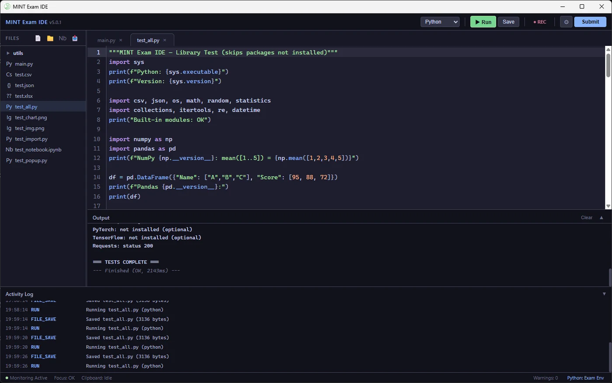
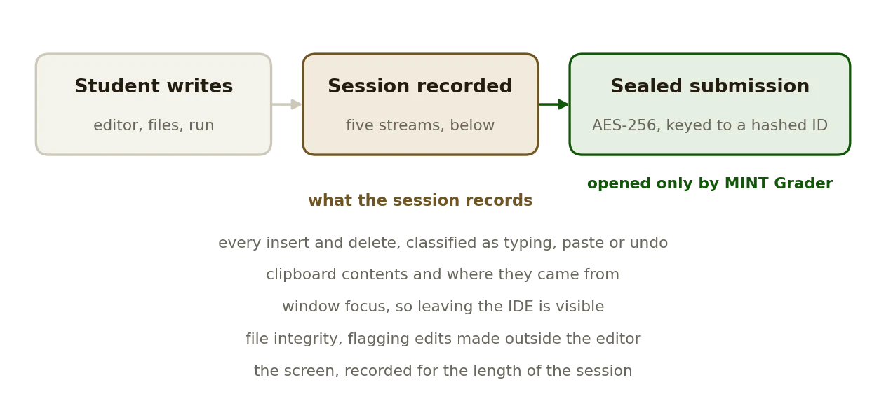

Development · 2026
MINT Exam IDE
The student side of a programming exam: an editor that records how the code was written, not only what.
SWAppRust · TS

What it does
- Syntax highlighting for Python, JavaScript, TypeScript, Java, C and C++, a file tree with drag and drop, and code run from the editor with its output beside it. Python can point at the system interpreter or a chosen virtual environment.
- Five streams run for the length of the session: edit history classified as typing, paste or undo; clipboard contents with the application they came from; window focus; file integrity; and a screen recording.
- The work is packed into an AES-256 encrypted archive whose key is derived from a hashed student identifier, so a submission cannot be opened, altered or re-sealed without the grader.
- One-pass classroom installers for Windows and macOS bring a portable Python, Node, a JDK, FFmpeg and WebView2.
Notes
- The interface is Korean, because that is who sits the exams it was built for.
- Windows installers are on the releases page; macOS builds from source because the project has no Apple Developer certificate.
- Integrity checking detects edits made outside the editor. It is not a sandbox and does not prevent them.
Facts
- Year
- 2026
- Status
- Public, release v5.0.3
- Stack
- Tauri: Rust for monitoring, recording and packaging; TypeScript for the editor
- Pair
- Opened by MINT Grader
Figures
